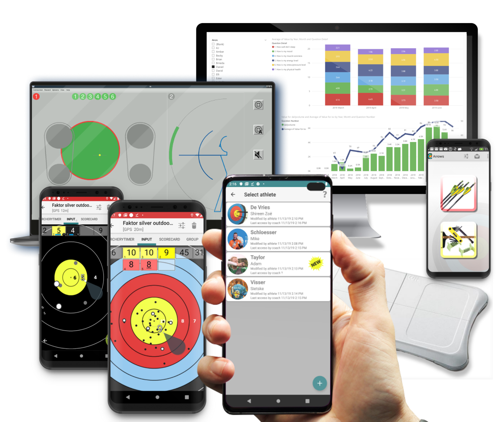
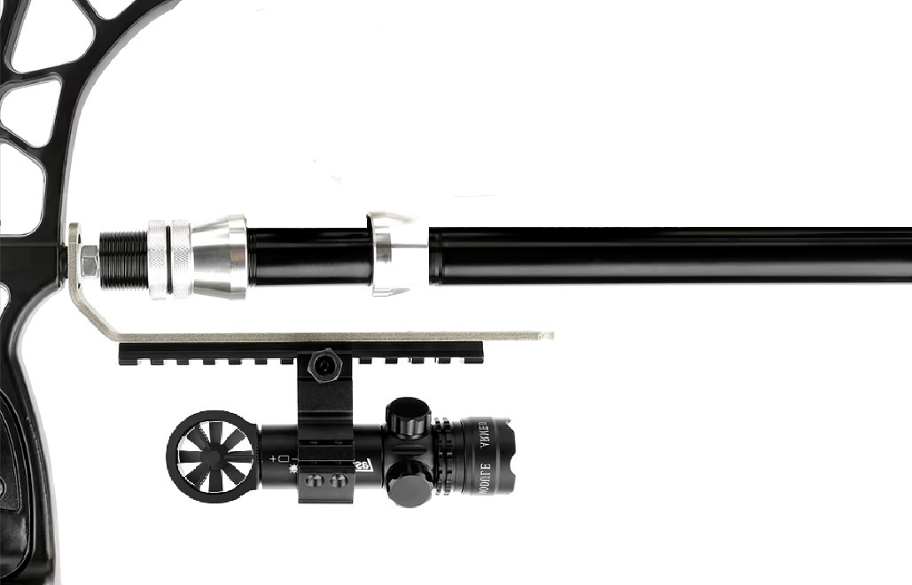

EAGLE'S EYE
ARCHERY VISION
Tu destino definitivo para la precisión, el enfoque y la excelencia en tiro con arco.


Que ofrecemos?
En Eagle's Eye Archery Vision, ofrecemos una línea avanzada de productos diseñados para elevar tu experiencia de tiro con arco a un nivel profesional. Nuestro innovador sistema incluye anteojos inteligentes que no solo asisten al arquero en tiempo real, brindando información precisa sobre la trayectoria y las condiciones del viento, sino que también mejoran la concentración y la precisión con alertas visuales personalizadas. Además, contamos con guantes equipados con sensores de alta tecnología que monitorean cada movimiento y ajuste de la mano, ayudando a mejorar la técnica y garantizar una postura óptima en cada tiro. Para completar nuestra oferta, el sensor avanzado para el arco recopila datos ambientales, como la temperatura y la humedad, analizando en tiempo real cómo afectan al disparo y proporcionando recomendaciones instantáneas para optimizar el rendimiento del arquero. Nuestra misión es convertir cada disparo en un acierto, dándote las herramientas para superar tus límites y alcanzar tu máximo potencial en cada competición o práctica.
PRODUCTOS

EAGLE VISIONPRO GLASSES
Los VisionPro Glasses asisten al arquero en tiempo real, ofreciendo información precisa sobre la trayectoria de la flecha y las condiciones del viento. Mejoran la concentración y precisión mediante alertas visuales personalizadas, ayudando a maximizar el rendimiento en cada disparo.

EAGLE SMART GRIP GLOVES
Los Smart Grip Gloves están diseñados con sensores que monitorean cada movimiento y ajuste de la mano, brindando información en tiempo real para mejorar la técnica y garantizar una postura óptima en cada tiro, permitiendo al arquero alcanzar su máximo potencial.
